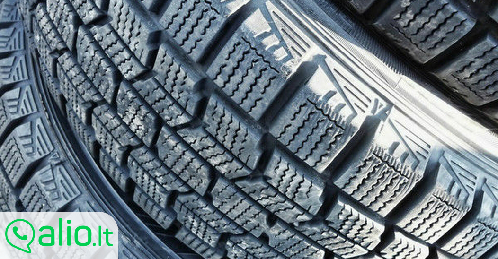

Welcome to padangos
Padangos | naujos-padangos.lt
2020.10.30 04:11Prisijungti Susisiekite su mumis Susisiekite dabar: +370 611 87779 Krepšelis 0 Prekė Prekės (tuščia)
Prekių nėra
Turi būti nustatyta Pristatymas 0,00 € VisoPirkti
Prekė sėkmingai pridėta į krepšelį Kiekis Viso Krepšelyje yra 0 prekė (-ės). Krepšelyje yra 1 prekė. Prekės viso Viso pristatymas (visai siuntai) Turi būti nustatyta Viso Pridėti daugiau prekių Užsakyti Menu Prekių katalogas Padangos Žieminės padangos Vasarinės padangos Universalios padangos Lengvųjų automobilių padangos Krovininės padangos Motociklų padangos Žemės ūkio padangos Industrinės padangos Visureigių padangos Mikroautobusų "C" padangos Džipų padangos Vilkikų padangos Priekabų padangos Sunkvežimių padangos Sportinės padangos Pristatymas Apmokėjimas Garantija Grąžinimas Visi gamintojai Accelera Achilles Advance Advance Tyre agro ADVANCE TYRE agro/indst ADVANCE TYRE kravas Advance Tyre krovininės Aeolus AGRICA Alceed Alliance Altenzo Amberway Annaite Antares Anteo kravas Anteo krovininės Aoteli Aplus Apollo Apollo kravas Apollo krovininės Aptany Ardent Ardent (Joyroad) Arivo Armour Armstrong Artum Artum (Comforser) ATJAUNOTAS (kravas) Atlas Atturo Aufine AUPLUS Aurora Austone Autogreen Autogrip Avalanche Avon Avon (Cooper) Barum BCT Bestdrive Bestrich BF GOODRICH BFGoodrich BKT Blacklion Boristar Boristar (Comforser) Boto Bridgestone Bridgestone akcija Briway Cachland Carlisle Ceat Centara Centara (Joyroad) CHANGFENG kravas Changfeng krovininės Charmhoo Chengshan Collin s Collins/Profil Comforser Compasal Compasal kravas Compass Condor Constancy Continental Cooper Cratos Cultor DAEWOO Dailyway Dayton Debica DELI Delinte Diamondback Diplomat DIVERSE DIVERSEN Dmack DOUBLE Double Coin Double Star DOUBLE STAR kravas Doublestar Doublestar krovininės Dunlop DURATRUN Duraturn Ecovision Electra EP Tyre Eracle Esa Tecar Eternity Eurotyre Evergreen EVERGREEN / JINYU Evergreen/Jinyu Evermax Falken Farroad Farroad (Saferich) Federal Firemax Firenza Firestone Firststop Formula Fortuna Fortune Fortune (Chengshun) Fronway Fulda FULL RUN kravas Full Run krovininės Fullrun Fullrun (Comforser) Fullway G&H Gajah Tunggal Galaxy General General Tire Geyer&Hosaja Ginell Ginell (Comforser) Gislaved Giti Giti kravas Giti krovininės Glob-Gum Goform Golden Crown Golden Tyre GoldenCrown kravas GoldenCrown krovininės Goldline Goldway Goodride Goodride kravas Goodride krovininės Goodyear Green Max Greenmax Greentrac GREMAX Grenlander Gripmax GT Radial GT RADIAL (kravas) GT Radial (krovininės) GTK GTR GTRADIAL GTR Habilead Haida Hankook HANKOOK (kravas) Hankook (krovininės) Headway Heidenau Hemisphere Hercules Hifly Hilo Horizon HWA-Fong (Duro) Ilink Imperial Infinity Insa Turbo Interstate Invovic IRC Tyre Jinyu Joyroad Kabat Kama Kapsen Kelly Kenda Keter Kinforest King Meiler KINGS Kings Tire Kingstar Kiti KITOS Kitos Pad Kleber Kormoran Kpatos Kumho Kumho/Marshal Lakesea Landsail Lanvigator Lassa Laufenn Lauffen Leao Lexani Ling Long LingLong LingLong kravas LingLong krovininės Long March Longmarch Luckyland Mabor Magna Malatesta Malatesta kravas Malatesta krovininės Malatesta-atnaujintos Malhotra Maloya Marangoni Marcher Mark Ma Mark Ma (Tri-Ace) Markgum Marshal Master Mastercraft Mastersteel Matador Matrax Maxam Maxtrek Maxxis Maxxis krovininės Maxxis moto Mazzini Medalist Mentor Meteor Metzeler Metzeler moto Michelin Mileking Milemore Milestone Minerva Minnell Mirage Mitas Mitas moto Momo Tires Motrio MRF MRL Multirac Multirac (Comforser) Multistar Nankang Neolin Nereus Nexen Nokian Nordexx Nordexx (Duraturn) Nordman Norrsken Norrsken-atnaujintos Novex Onyx ONYX kravas Onyx krovininės Opals Orium Ovation Ozka Paxaro Petlas Pharos Pirelli PIRELLI (kravas) Pirelli (krovininės) Pirelli moto Platin Pneu Laurent Point S Point-S Points Powertrac Powertrac kravas Powertrac Premiorri Primex Primwell Profil Profil-atnaujintos Provato RACEALONE Radar Rapid REIFEN HINGHAUS RIEPAS dažādas Riken Roadcruza Roadmarch Roadstone Roadtec Rockstone Rodatec Rosava Rotalla Routeway Rovelo ROYALBLACK Runderneuert Russ Rydanz Saetta Saferich Sailun SAILUN kravas Sailun Krovininės Sava Sava moto Seiberling Semi-Pro Semperit Silverstone SOARWAY Sonar Sonny Speedways Sportiva Star Performer Starfire Starmaxx Stomil Sumitomo Sunew Sunfull Sunitrac Sunny Sunote Sunwide Superia SWT Taifa(TEFF) Taurus Tekpro TEST Three-A Tigar Toledo Torque Tourador Toyo Tracmax Traxmac Trazano TREKPRO Trelleborg Tri Ace Tri-Ace Triangle Triangle kravas Triangle krovininės Tristar Tyfoon U-Xcent Uniglory Unigrip Uniroyal Veloce Viatti Viking Voyager Vredestein Wanli Westlake WESTLAKE (kravas) Westlake (krovininės) Westlake Premium Winda Windforce Windforce krovininės Winrun Winter Contact Wolf Yatone Yokohama Zeetex Zeknova Zestino Zeta Kontaktai Atgal PadangosPadangos
Padangos Žieminės padangos Vasarinės padangos Universalios padangos Lengvųjų automobilių padangos Krovininės padangos Motociklų padangos Žemės ūkio padangos Industrinės padangos Visureigių padangos Mikroautobusų C padangos Džipų padangos Vilkikų padangos Priekabų padangos Sunkvežimių padangos Sportinės padangosStraipsniai
StraipsniaiGamintojai
Accelera Achilles Advance Advance Tyre agro ADVANCE TYRE agro/indst ADVANCE TYRE kravas Advance Tyre krovininės Aeolus AGRICA Alceed Alliance Altenzo Amberway Annaite Antares Anteo kravas Anteo krovininės Aoteli Aplus Apollo Apollo kravas Apollo krovininės Aptany Ardent Ardent (Joyroad) Arivo Armour Armstrong Artum Artum (Comforser) ATJAUNOTAS (kravas) Atlas Atturo Aufine AUPLUS Aurora Austone Autogreen Autogrip Avalanche Avon Avon (Cooper) Barum BCT Bestdrive Bestrich BF GOODRICH BFGoodrich BKT Blacklion Boristar Boristar (Comforser) Boto Bridgestone Bridgestone akcija Briway Cachland Carlisle Ceat Centara Centara (Joyroad) CHANGFENG kravas Changfeng krovininės Charmhoo Chengshan Collin s Collins/Profil Comforser Compasal Compasal kravas Compass Condor Constancy Continental Cooper Cratos Cultor DAEWOO Dailyway Dayton Debica DELI Delinte Diamondback Diplomat DIVERSE DIVERSEN Dmack DOUBLE Double Coin Double Star DOUBLE STAR kravas Doublestar Doublestar krovininės Dunlop DURATRUN Duraturn Ecovision Electra EP Tyre Eracle Esa Tecar Eternity Eurotyre Evergreen EVERGREEN / JINYU Evergreen/Jinyu Evermax Falken Farroad Farroad (Saferich) Federal Firemax Firenza Firestone Firststop Formula Fortuna Fortune Fortune (Chengshun) Fronway Fulda FULL RUN kravas Full Run krovininės Fullrun Fullrun (Comforser) Fullway G&H Gajah Tunggal Galaxy General General Tire Geyer&Hosaja Ginell Ginell (Comforser) Gislaved Giti Giti kravas Giti krovininės Glob-Gum Goform Golden Crown Golden Tyre GoldenCrown kravas GoldenCrown krovininės Goldline Goldway Goodride Goodride kravas Goodride krovininės Goodyear Green Max Greenmax Greentrac GREMAX Grenlander Gripmax GT Radial GT RADIAL (kravas) GT Radial (krovininės) GTK GTR GTRADIAL GTR Habilead Haida Hankook HANKOOK (kravas) Hankook (krovininės) Headway Heidenau Hemisphere Hercules Hifly Hilo Horizon HWA-Fong (Duro) Ilink Imperial Infinity Insa Turbo Interstate Invovic IRC Tyre Jinyu Joyroad Kabat Kama Kapsen Kelly Kenda Keter Kinforest King Meiler KINGS Kings Tire Kingstar Kiti KITOS Kitos Pad Kleber Kormoran Kpatos Kumho Kumho/Marshal Lakesea Landsail Lanvigator Lassa Laufenn Lauffen Leao Lexani Ling Long LingLong LingLong kravas LingLong krovininės Long March Longmarch Luckyland Mabor Magna Malatesta Malatesta kravas Malatesta krovininės Malatesta-atnaujintos Malhotra Maloya Marangoni Marcher Mark Ma Mark Ma (Tri-Ace) Markgum Marshal Master Mastercraft Mastersteel Matador Matrax Maxam Maxtrek Maxxis Maxxis krovininės Maxxis moto Mazzini Medalist Mentor Meteor Metzeler Metzeler moto Michelin Mileking Milemore Milestone Minerva Minnell Mirage Mitas Mitas moto Momo Tires Motrio MRF MRL Multirac Multirac (Comforser) Multistar Nankang Neolin Nereus Nexen Nokian Nordexx Nordexx (Duraturn) Nordman Norrsken Norrsken-atnaujintos Novex Onyx ONYX kravas Onyx krovininės Opals Orium Ovation Ozka Paxaro Petlas Pharos Pirelli PIRELLI (kravas) Pirelli (krovininės) Pirelli moto Platin Pneu Laurent Point S Point-S Points Powertrac Powertrac kravas Powertrac Premiorri Primex Primwell Profil Profil-atnaujintos Provato RACEALONE Radar Rapid REIFEN HINGHAUS RIEPAS dažādas Riken Roadcruza Roadmarch Roadstone Roadtec Rockstone Rodatec Rosava Rotalla Routeway Rovelo ROYALBLACK Runderneuert Russ Rydanz Saetta Saferich Sailun SAILUN kravas Sailun Krovininės Sava Sava moto Seiberling Semi-Pro Semperit Silverstone SOARWAY Sonar Sonny Speedways Sportiva Star Performer Starfire Starmaxx Stomil Sumitomo Sunew Sunfull Sunitrac Sunny Sunote Sunwide Superia SWT Taifa(TEFF) Taurus Tekpro TEST Three-A Tigar Toledo Torque Tourador Toyo Tracmax Traxmac Trazano TREKPRO Trelleborg Tri Ace Tri-Ace Triangle Triangle kravas Triangle krovininės Tristar Tyfoon U-Xcent Uniglory Unigrip Uniroyal Veloce Viatti Viking Voyager Vredestein Wanli Westlake WESTLAKE (kravas) Westlake (krovininės) Westlake Premium Winda Windforce Windforce krovininės Winrun Winter Contact Wolf Yatone Yokohama Zeetex Zeknova Zestino Zeta PadangosNaujos Padangos Internetu
Padangos
Yra 46936 prekės(-ių).
Subkategorijos
Žieminės padangos
Žieminės padangos
Vasarinės padangos
Vasarinės padangos
Universalios padangos
Universalios padangos
Lengvųjų automobilių...
Lengvųjų automobilių padangos
Rodyti: Tinklelis Sąrašas Ankstesnis 1 2 3 ... 3130 Tęsti Rodoma 1 - 15 iš 46936 prekių 12,00 € Yra sandėlyjeKamera
12,00 € Į krepšelį Plačiau Yra sandėlyje
Prekių likutis: 100+
Pridėti palyginimui 18,01 € Pristatymas 0-2 d.d.DUNLOP SP ICE SPORT 205/55R16 91T C E 70 dB
Pristatymas per 0-2 d.d. Garantija 24 mėn. Gamyba 2020 m.
18,01 € Į krepšelį Plačiau Pristatymas 0-2 d.d.Prekių likutis: 4
Pridėti palyginimui 18,02 € Pristatymas per 0-1 d.d.HANKOOK 205/60R15 91H HANKOOK H730 DOT2011
18,02 € Į krepšelį Plačiau Pristatymas per 0-1 d.d.
Prekių likutis: 1
Pridėti palyginimui 18,02 € Pristatymas per 0-1 d.d.MENTOR 165/65R14 79T M200 MENTOR DOT2012
18,02 € Į krepšelį Plačiau Pristatymas per 0-1 d.d.
Prekių likutis: 1
Pridėti palyginimui 18,02 € Pristatymas per 0-1 d.d.HANKOOK 275/65R17 115T HANKOOK RW11 DOT2012
18,02 € Į krepšelį Plačiau Pristatymas per 0-1 d.d.
Prekių likutis: 1
Pridėti palyginimui 18,02 € Pristatymas 1-2 d.d.ROTALLA 109 145/70R13 71T E E 71 dB
18,02 € Į krepšelį Plačiau Pristatymas 1-2 d.d.
Prekių likutis: 1
Pridėti palyginimui 18,02 € Pristatymas per 0-1 d.d.CONTINENTAL 205/70R15 VIKINGCONTACT 5 96T DOT2013
18,02 € Į krepšelį Plačiau Pristatymas per 0-1 d.d.
Prekių likutis: 1
Pridėti palyginimui 18,11 € Pristatymas 1-2 d.d.WESTLAKE Entda RP28 195/60R14 86H C C 73 dB
18,11 € Į krepšelį Plačiau Pristatymas 1-2 d.d.
Prekių likutis: 1
Pridėti palyginimui 18,33 € Pristatymas 1-2 d.d.HANKOOK K425 175/60R15 81H
18,33 € Į krepšelį Plačiau Pristatymas 1-2 d.d.
Prekių likutis: 1
Pridėti palyginimui 18,38 € Pristatymas per 0-1 d.d.KITOS PAD 165/70R14 STARFIRE W200 81T DOT2015
18,38 € Į krepšelį Plačiau Pristatymas per 0-1 d.d.
Prekių likutis: 1
Pridėti palyginimui 18,67 € Pristatymas 1-2 d.d.KING MEILER MHT 175/55R15 77T
18,67 € Į krepšelį Plačiau Pristatymas 1-2 d.d.
Prekių likutis: 1
Pridėti palyginimui 18,74 € Pristatymas per 0-1 d.d.GISLAVED 185/65R14 URBAN SPEED 86T DOT2015
18,74 € Į krepšelį Plačiau Pristatymas per 0-1 d.d.
Prekių likutis: 1
Pridėti palyginimui 18,74 € Pristatymas per 0-1 d.d.MENTOR 175/70R14 MENTOR M400 84T DOT2012
18,74 € Į krepšelį Plačiau Pristatymas per 0-1 d.d.
Prekių likutis: 1
Pridėti palyginimui 18,76 € Pristatymas 1-2 d.d.SAILUN SH402 165/70R14 81T E E 70 dB
18,76 € Į krepšelį Plačiau Pristatymas 1-2 d.d.
Prekių likutis: 1
Pridėti palyginimui 18,86 € Pristatymas 1-2 d.d.WINTER CONTACT 790 185/55R14 80T
18,86 € Į krepšelį Plačiau Pristatymas 1-2 d.d.
Prekių likutis: 1
Pridėti palyginimui Atgal 1 2 3 ... 3130 Toliau Rodoma 1 - 15 iš 46936 prekiųNaujos padangos internetu
Padangos – tai sudėtingas inžinerinis gaminys, bei labai svarbi transporto priemonės dalis. Jums važiuojant keliu tik padangos „jungia“ Jus su kelio danga, kuo geresnį sukibimą sugeba sukurti padanga tuo saugiau Jus važiuojate. Kadangi kelio dangos pasirinkti, dažniausiai, negalite, tad pasirūpinkite saugiomis padangomis, kurios užtikrins maksimalų sukibimą taip apsaugodami save ir savo artimuosius nuo netikėtų pavojų. Padangos užtikrina saugų automobilio valdymą. Nuo padangų būklės, bei kokybės tiesiogiai priklauso stabdymo kelias, sukibimas su šlapia danga, triukšmas salone, bei daug kitų parametrų. Visada rekomenduojama investuoti į kokybiškas naujas padangas. Padangų gamintojai nuolat tobulina savo technologijas siekdami sukurti kuo geresnius, saugesnius, mažiau aplinką teršiančius produktus.
Naujos-padangos.lt siūlo platų visų tipų naujų padangų pasirinkimą internetu. Stengiamės, kad mūsų internetinėje parduotuvėje visada būtų saugiausi naujų padangų modeliai ir geriausios padangų kainos . Padangos internetu – puikus pasirinkimas taupantis Jūsų laiką ir pinigus. Jums nereikės gaišti lako važinėjant po fizines padangų parduotuves. Mes pristatysime Jums padangas Jūsų nurodytu adresu, kurjeris susisieks su Jums iš anksto, suderins Jums patogų pristatymo laiką. Siūlome pačius naujausius padangų modelius, tik saugias ir kokybiškas naujas padangas. Visoms naujos-padangos.lt parduodamoms padangoms suteikiama gamintojo garantija. Įsigijusiems padangas galioja 14 dien ų padangų grąžinimo garantija. Padangos pigiau internetu, greičiau, patogiau, ypač didelis padangų pasirinkimas vienoje vietoje www.naujos-padangos.lt .
Naujos-padangos.lt – tai padangos Vilniuje , padangos Kaune ir visoje Lietuvos teritorijoje, kadangi padangos pristatomos su kurjeriais Jūsų nurodytu adresu, iš anksto suderintu laiku.
Padangų rūšys
Pagal sezonus padangos skirstomos į: vasarines padangas (skirtas naudoti šiltuoju metu sezonu), žiemines padangas (skirtas naudoti šaltuoju metu sezonu) ir universalias (demisezonines) padangas (skirtas naudoti visais sezonais). Geriausias pasirinkimas kiekvienam sezonui tinkančios padangos . Turint du komplektus padangų: vasarines ir žiemines, Jūs turėsite geriausias padangų savybes visais metų sezonais. Universalios padangos , tai kompromisinis variantas skirtas vairuotojams retai važiuojantiems, trumpais atstumais, ir tik gerais orais.
Padangų keitimo laikas
Pagal Lietuvoje galiojančius įstatymus, žiemos metu privaloma važinėti tik su žieminėmis arba universaliomis padangomis. Nuo lapkričio 10 d. iki balandžio 1 d. leidžiama eisme dalyvauti tik su žieminėmis arba universaliomis padangomis. Dygliuotas padangas privaloma pasikeisti iki balandžio 10 d., vėliau eksploatuoti dygliuotas žiemines padangas draudžiama. Žiemos metu padangų protektoriaus likutis negali būti mažesnis nei 3 mm. (Latvijoje 4 mm.). Vasaros metu padangų protektorius turi būti ne mažesnis nei 1,6 mm. Dėl saugumo, didieji padangų gamintojai rekomenduoja nelaukti, o padangas keisti ankščiau, kai protektoriaus gylio likutis ne mažesnis nei 3 mm, kadangi tuomet dar išlaikomos geriausios padangų eksploatacinės savybės, esant mažesniam protektoriaus gyliui labai pablogėja sukibimas su kelio danga, ypač ant šlapios dangos, per mažas protektoriaus gylis nesugeba tinkamai išstumti vandens, dėl to gali įvykti ypač pavojingas reiškinys - akvaplaningas, t.y. tarp padangos ir kelio dangos susidaro vandens tarpas, tada padanga nebeliečia kelio paviršiaus ir dėl to automobilis tampa nevaldomas, pradeda slysti, nebereaguoja į vairuotojo komandas ir vairuotojas tampa tiesiog keleiviu. Taip pat nerekomenduojame vasarą važinėti su žieminėmis padangomis, ypač minkšto mišinio, nes žieminės padangos vasaros metu turės žymiai ilgesnį stabdymo kelia, prastą sukibimą su šlapia danga, blogas automobilio valdymo savybes. Naujos padangos, vasarą - vasarinės, žiemą – žieminės, visada geriausias ir racionaliausias pasirinkimas norintiems turėti maksimalų saugumą tiek sau tiek visai šeimai.
Pagrindiniai padangų žymėjimai
Ant kiekvienos padangos gamintojas nurodo padangų išmatavimą , jis žymimas pvz: 205 55 R16 padangos. Renkantis padangas labai svarbu, kad išmatavimas būtų tinkamas:
205 – padangos plotis mm. Jis matuojamas nuo vienos padangos sienelės iki kitos. 55 – padangos aukščio koeficientas. Tai padangos aukščio ir pločio santykis. „55“ reiškia, kad aukštis lygus 55 proc. padangos pločio. R16 – rato diametras. Ratlankio aukštis coliais.Šalia šių pagrindinių padangos išmatavimų visada nurodomi padangos greičio ir apkrovos indeksai pvz. 91H:
91 – padangos apkrovos indeksas. Jis rodo maksimalią leistiną padangos apkrovą. viena padanga gali saugiai išlaikyti 615 kg, tad automobilis su kroviniu neturėtų viršyti 2460 kg. H - padangos greičio indeksas. Rodo maksimalų greitį kokį galima pasiekti su padanga..Taip pat maksimalus leistinas svoris vienai padangai gali būti išreikštas ir kilogramais ir parašytas šalia „Max. Load“.
Padangų apkrovos indeksų lentelė:
Padangos greičio indeksas būna parašytas iš karto po padangos apkrovos indekso. Padangos greičio indeksas (H) reiškia, kad maksimalus greitis, kuriuo galima važiuoti su šiomis padangomis, yra 210 km/h.
Padangų greičio indeksų lentelė:
Padangos pagal automobilį
Kokias padangas rinktis ? Visada rekomenduojama rinktis automobilio gamintojo rekomenduojamų parametrų padangas. Juos galima rasti automobilio žinyne, ant informacinės metalinės plokštelės, kuri gali būti ant vairuotojo arba keleivio vidinių durelių pusių, taip pat ant kuro bako dangtelio.
ES padangų ženklinimas
ES padangų ženklinimas – labai patogiai pateikiama informacija apie tris svarbius padangų parametrus. ES padangų ženklinimas pateikia svarbią saugos ir aplinkosaugos informaciją apie automobilių padangas. Padangas galime palyginti pagal sukibimą su šlapia kelio danga, degalų naudojimą ir keliamą išorinį triukšmą. ES padangų ženklinimas taikomas naujoms padangoms, išimtis – dygliuotos padangos. ES padangos ženklinimas yra užklijuojamas ant padangos. Naujos-padangos.lt internetinėje parduotuvėje parduodamų padangų ES ženklinimas rodomas prie kiekvienos prekės.
Degalų naudojimo efektyvumas
Nuo padangų pasipriešinimo riedėjimui gali priklausyti iki 20 proc. visų degalų sąnaudų. Pasirinkus aukštos degalų naudojimo efektyvumo klasės automobilių padangas nuvažiuosite daugiau kilometrų, o Jūsų automobilis išmes mažiau CO2. Degalus taupančioms padangoms reikia mažiau energijos, todėl galiausiai sunaudojama mažiau degalų.
Degalų naudojimo efektyvumas vertinamas skalėje nuo A iki G. A – didžiausias degalų naudojimo efektyvumo vertinimas, G – mažiausias degalų naudojimo efektyvumo vertinimas. D klasė netaikoma lengvųjų automobilių padangoms . Skirtumas tarp A ir G klasės padangų gali būti iki 7,5 proc. mažesnės degalų sąnaudos. Pavyzdžiui, pasirinkę A, o ne G klasės padangas, galite sutaupyti daugiau nei 6 litrus degalų 1000 kilometrų*. Labai svarbu, kad tuo pačiu sumažinsite neigiamą poveikį aplinkai !
*Remiantis tuo, kad automobilis vidutiniškai sunaudoja 8 litrus/100 km., litro degalų kaina yra 1,50 euro ir padangomis vidutiniškai nuvažiuojama 35 000 km. Faktiškai sutaupyti degalai ir išlaidos gali skirtis, tai priklauso nuo padangų slėgio, transporto priemonės svorio ir vairavimo stiliaus.
Sukibimas su šlapia kelio danga
Pasirinkus padangas su aukšta sukibimo su šlapia kelio danga klase, staigiai stabdant stabdymo kelias bus trumpesnis. ES vertinime pagrindinis dėmesys skiriamas vienam padangos sukibimo su šlapia kelio danga aspektui – stabdymui esant šlapiai kelio dangai. Sukibimas su šlapia kelio danga vertinamas skalėje nuo A iki F. D ir G kategorijos netaikomos lengvųjų automobilių padangoms . A – didžiausias įvertinimas F – mažiausias įvertinimas. Važiuojant automobiliu 80 km/h greičiu ir staigiai stabdant A klasės padangų stabdymo kelias gali būti iki 18 metrų trumpesnis nei F klasės padangų.*
* Matuojant pagal bandymų metodus, nurodytus EB reglamente 1222/2009. Stabdymo kelias priklauso nuo vairavimo sąlygų ir kitų veiksnių. Nurodytos etiketės vertės pateikiamos tik kaip pavyzdys. Konkrečių padangų protektoriaus raštų ir dydžių vertinimo rezultatai gali skirtis.
Triukšmas
Įsigiję padangas, keliančias mažiau triukšmo, sumažinsite poveikį aplinkai.
ES ženklinime triukšmo parametras nurodo padangų keliamą išorinį triukšmą decibelais. Daugelis žmonių nežino decibelų verčių, todėl yra pateikiamas garsiakalbio vaizdas su juodomis bangomis, rodantis, kiek triukšmo kelia padangos. Kuo daugiau bangų, tuo daugiau triukšmo kelia padangos:
1 juoda banga – tylios (triukšmo lygis bent 3dB mažesnis už ES teisės aktuose nustatytą ribą) 2 juodos bangos – vidutiniškai triukšmingos (triukšmo lygis atitinka ES teisės aktuose nustatytą ribą arba yra iki 3 dB mažesnis) 3 juodos bangos – triukšmingos (viršija ES nustatytas ribas)Vos kelių decibelų skirtumas lemia gerokai didesnį triukšmo lygį. Pavyzdžiui, vos 3 dB didesnis triukšmas reiškia, kad padangos kelia dvigubai didesnį išorinį triukšmą. Galime įsivaizduoti, kiek tylesni būtų mūsų miestai ir miesteliai, jei visi naudotume padangas, keliančias mažiau triukšmo.
Ar pigios padangos yra tinkamas pasirinkimas?
Pigios padangos nebūtinai blogas pasirinkimas. Pigios padangos – tai dažniausiai Kinijoje pagamintos padangos , kurios turi visus privalomus kokybės sertifikatus, yra saugios ir turi visas gamintojo taikomas garantijas. Visi Premium segmento padangų gamintojai taip pat turi pigių padangų liniją. Pavyzdžiui Michelin gamina pigių padangų liniją – Kormoran, Taurus, Tigar, Riken.
Pigios padangos puikiai tinka retai, mažais atstumais, nedideliais greičiais važinėjantiems vairuotojams. Naujos-padangos.lt siūlo platų naujų pigių padangų taip pat vidutinės klasės bei Premium klasės padangų asortimentą.
Pristatymas
Padangos Vilnius , Kaunas, Klaipėda, Šiauliai, Panevėžys, Alytus, Mažeikiai ir visi kiti Lietuvos miestai, rajonai ir kaimai – greitas padang ų pristatymas su kurjeriu, Jūsų nurodytu adresu.
Padangos su akcija
Visi norime sutaupyti, įsigyti prekes pigiau, pas mus nerasite dirbtinių reklamų: “ padangos akcija” ar “ padangos nuolaida”, mes nedarome dirbtinių nuolaidų ar akcijų. Pas mus ištisus metus galioja žemos padangų kainos.
Jeigu turite abejonių ir Jums reikia pagalbos išsirenkant padangas tinkančias Jūsų automobiliui, galite drąsiai kreiptis el. paštu info@naujos-padangos.lt arba telefonu +370 611 87779 ir kartu rasime geriausią variantą.
Naujienlaiškiai
FacebookSekite mus
Kategorijos
Padangos Žieminės padangos Vasarinės padangos Universalios padangos Lengvųjų automobilių padangos Krovininės padangos Motociklų padangos Žemės ūkio padangos Industrinės padangos Visureigių padangos Mikroautobusų C padangos Džipų padangos Vilkikų padangos Priekabų padangos Sunkvežimių padangos Sportinės padangos Lengvųjų automobilių padangos Žieminės padangos Vasarinės padangos Universalios padangosInformacija
Susisiekite su mumis Kontaktai Pristatymas Apmokėjimas Garantija Naujos padangos internetu Privatumo politika Taisyklės Grąžinimas Duomenų tvarkytojai Draugai ir partneriai Padangų gamintojai Straipsniai Naujos-Padangos.Lt - tai internetinė naujų padangų parduotuvė. Prekiaujame visų tipų padangomis. Siūlome itin platų padangų asortimentą, greitą pristatymą, saugų atsiskaitymą, garantijas. naujos-padangos.lt © 2019 | Internetinių svetainių / puslapių kūrimas : HostPartner.lt™ | Talpinama Profesionalus hostingasMano paskyra
Mano užsakymai Mano grąžinimai Mano suteiktos nuolaidos Mano adresai Mano asmeninė informacija Mano kuponaiParduotuvės informacija
Sudomino UAB, Registracijos adresas - Paribio g. 30-43 Vilnius LT-08103 Padangų surinkimu ir perdirbimu rūpinasi - VĮ Padangų importuotojų organizacija. Susisiekite dabar: +370 611 87779 El. paštas: info@naujos-padangos.lt Privatumo politika Aš nesutinku Aš sutinku Privatumo politika Aš nesutinku Aš sutinku Privatumo politika Aš nesutinku Aš sutinku